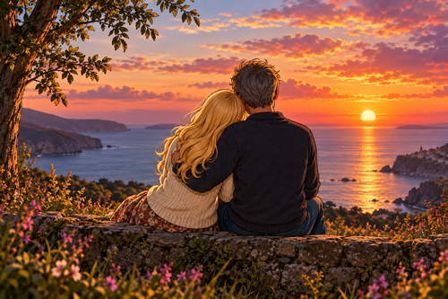

A Sunset or a Sunrise ... do we really need to decide?
Once again I write these words unspoken as no more is my heart broken,
nor do my emotions do a summersault,
I will leave that to my bright white yearning soul,
kept in check are my feelings now
and walk around step by step, slowly, carefully jumping up onto
and sit back upon that fence bounding a field
or ocean of sorrows deep and blue;
which are there when I am without you,
otherwise I am full of joy when kissing you within a sweet ploy.
I am tentative, circumspective with my locked loving vision being deep inside of you
and with caution now do I approach you,
as I do not want to see you revolt and bolt again,
though you have good reason too,
and dare I suggest it is only eight days out of a cyclic month,
which we need to be watchful of.
You know what I am dreaming of.
I dance and flirt with a balancing act of weighty notions,
with one scale weighed down by the experience of endless days,
weeks of no contact with you
and on the other to search
and create as many ways as I can to be with you in your mind, body and soul.
Which is a reality overwhelm which will never do for you,
and as such I push off the scales to leave my door open, ajar,
waiting for you to text, call or meet again,
a luxury thought left alone on a little shelf,
lost in my confused mind,
with no roots to grow.
With my eyes blind once again,
full of moving watery tears,
not because I am unhappy or blue,
just the reverse,
it is a small partial miracle to me that we still communicate in a way which I know is unique,
aside from good friendship talk
or knowing lovers winks prepared to do
and please each other as we may see fit,
under our secret garden pink,
and I would like to soothe away those tears from your pretty and graceful face,
It is also sometimes like a tussle of wits,
with a worthy adversary from which we could achieve true life partnership,
respect for each other, as equals,
and the challenge we bring to one another,
perhaps once again,
no more intense speculation as I wish not to limit your cultivation
and our simple, hidden and unconventional yo-yo courtship.
No longer do I wait and stare at my mobile phone wishing you to text or call me,
or will I ponder whether to try and contact,
and after hours of agonising deliberations text,
then left waiting in vain with no response,
so no more of this when I know you are not home alone,
as in the late evenings and the weekends are truly out of bounds.
Perhaps I still cagily kind of wish for more time for us to be alone,
away from a crowd or people that we know,
this time I crave for:
to talk and share our deepest feelings
or maybe simply just to look and touch, kiss and caress you,
with fondness and love to bring you to a joyful,
exciting release,
‘tis a pastime of endless simple peace and bliss.
So back to my posed with prose leading question
and knowing that the answers are not the answer to my prayers,
between the sunrise and sunset,
we create our scared space,
which is only known betwixt the two of us.
I suppose what I want and crave for is not to have to ask
and just be with you for all the sunsets and sunrises that God will grant with consent
and no more will we be standing in a nightfall of a shady unknown passions
and life will flow naturally and in a carefree gentle flood
and wash away all moody motions of separation
and together with our hands and bodies entwined,
held tight,
never to let go,
and with moon beam twilight may our love grow and flourish.